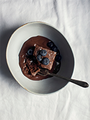

Carrés de gâteau à la Danette & coulis de chocolat
Ingrédients :
- • 1/2 tasse de farine
- • 1/4 de tasse de poudre de cacao
- • 1 c. à thé de poudre à pâte
- • Une pincée de sel
- • 4 œufs
- • 3/4 de tasse de sucre
- • 1/2 tasse d'huile végétale
- • Le jus de ½ citron
- • 1/2 tasse de lait
- • 1 pot de Danette au chocolat
Pour le crème
- • 1 pot de Danette
- • 3,5 oz (1 tablette) de chocolat au lait, fondu
- • 1/2 tasse de crème à cuisson
Pour le glaçage
Étapes
- • Préchauffer le four à 350 °F. Tapisser un moule à gâteau carré de 8 pouces de papier parchemin. Réserver.
- • Dans un bol, combiner la farine, la poudre de cacao, la poudre à pâte et le sel.
- • Dans un autre bol, fouetter les œufs avec le sucre. Ajouter l'huile, le jus de citron et le lait, puis bien remuer avant de verser la Danette.
- • Mélanger tous les ingrédients « pour le glaçage », puis servir avec le gâteau.